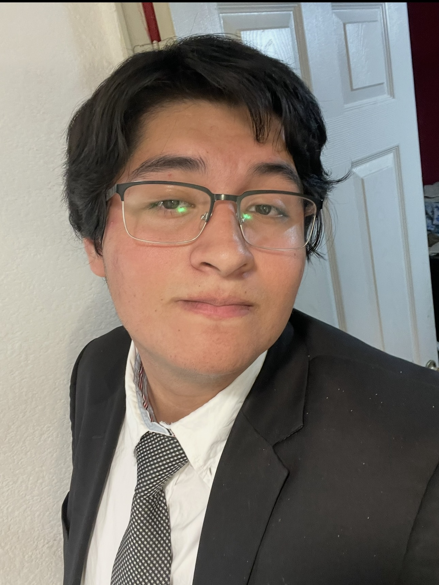
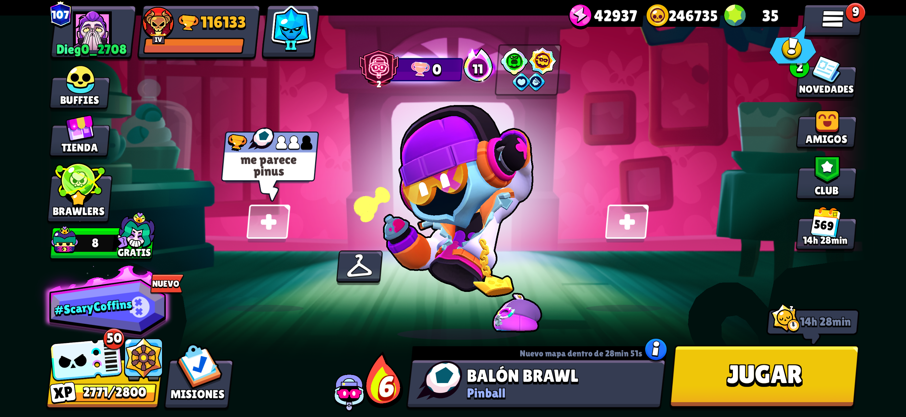
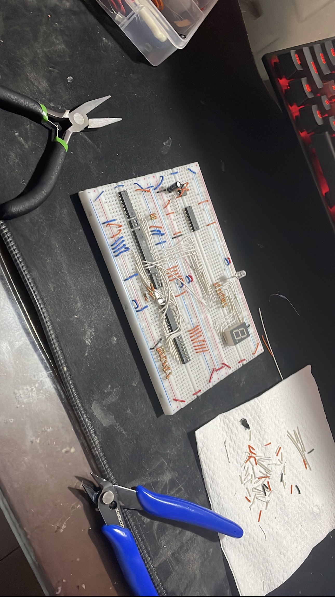
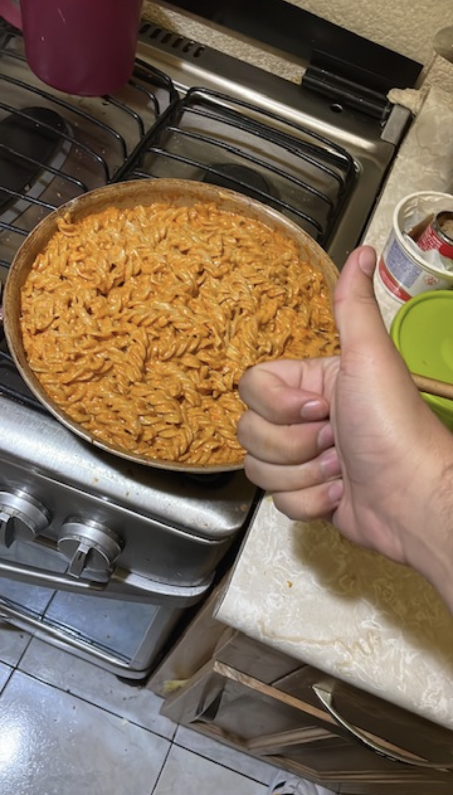

ACTUALMENTE
Ingeniería en Sistemas
Computacionales
Escuela Superior de Cómputo
Instituto Politécnico Nacional
Estudiante en ESCOM · IPN
Hola, soy
Estoy construyendo mi camino entre la ciberseguridad, el desarrollo web y la electrónica digital. Me gusta resolver problemas y aprender haciendo.

01 / MI FORMACIÓN
La universidad es el punto de partida. Los proyectos en equipo son donde pongo en práctica lo que aprendo.
ACTUALMENTE
Escuela Superior de Cómputo
Instituto Politécnico Nacional
En curso: Fundamentos para la ciberseguridad con tecnologías de Microsoft.
Estudios en curso. Nivel B2 aproximado, autoevaluado.
HERRAMIENTAS CON LAS QUE HE TRABAJADO
También tengo experiencia inicial con Microsoft Azure, Defender y Purview.
02 / LO QUE HE CONSTRUIDO
PROYECTO ACADÉMICO · EN EQUIPO
Una plataforma web de compra, venta, donación y trueque para la comunidad politécnica. Participé en la concepción del proyecto, el desarrollo web y la retroalimentación del equipo.
PROYECTO ACADÉMICO · EN EQUIPO
Una plataforma para gestionar eventos universitarios. Desarrollé el motor de taquilla y participé en el frontend y el backend junto con un equipo escolar.
03 / FUERA DEL CÓDIGO
Explorar, crear y disfrutar el proceso. Así me gusta pasar el tiempo fuera de clase.

Disfruto explorar mundos abiertos y resolver puzzles y retos. Siempre hay un lugar nuevo por descubrir o un desafío por superar.

Ensamblar circuitos con música de fondo me relaja mucho. Disfruto ese momento de concentración mientras voy armando cada conexión.

Me gusta cocinar mis platillos favoritos y dedicarles el esfuerzo necesario para que queden justo como me gustan. Disfrutar el resultado también es parte del plan.
04 / ACERCA DE CRIPTOGRAFÍA
RSA muestra una idea central de la criptografía: compartir una llave para cifrar mensajes y conservar otra para descifrarlos.
Los tres investigadores del MIT propusieron RSA, un sistema de criptografía de llave pública. Su nombre reúne las iniciales de sus apellidos.
En RSA se cifra con una llave pública y se descifra con una llave privada. El sistema utiliza aritmética modular; la dificultad de factorizar productos de primos grandes forma parte de su seguridad.
Leer el documento original en el MITElige un número, cífralo y recupera el original.
n = 143 e = 742⁷ mod 143 = 81
Ejemplo didáctico con primos pequeños (11 y 13) y d = 103. Muestra la operación matemática de RSA; no se utiliza para proteger información real.
05 / PARA LLEVAR
LLAVE PÚBLICA
Generaré mi llave pública en la próxima práctica de RSA. Cuando esté lista, este enlace permitirá descargarla.
SIGAMOS EN CONTACTO
Me interesa encontrar un espacio de servicio social donde pueda aprender, colaborar y aportar en proyectos de tecnología.